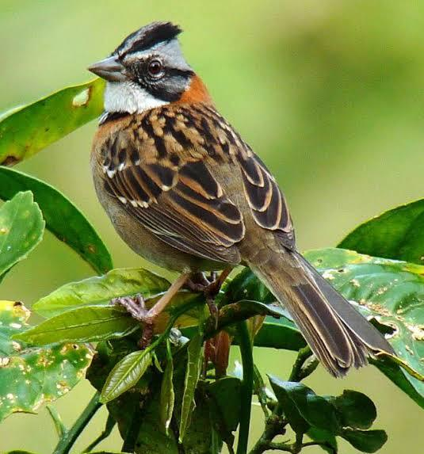

Publicado por la Unión de Ornitólogos de Chile
| Vista Previa | Nombre del Ave | Tipo | Lugar / Comuna | Fecha y Hora |
|---|---|---|---|---|
|
 |
Chincol (Zonotrichia capensis) | Terrestre / Jardín | Santiago, Región Metropolitana | 25/08/2026 10:30 hrs |
|
|
Cernícalo (Falco sparverius) | Rapaz / Caza | Valparaíso, Región de Valparaíso | 24/08/2026 16:15 hrs |
Página 1 de 5
« Anterior | 1 | 2 | 3 | Siguiente »
Aviso legal: El material multimedia y los datos de avistamiento publicados en esta plataforma son aportados exclusivamente por personas voluntarias registradas.
© 2026 Unión de Ornitólogos de Chile.